Fire Hydrant surface box
[Sources for this page]Sources for this page
- Water Supplies Department (HKSAR Government), originally on Y1992-M06-D09, revised on Y2003-M11-D14 | Water Supplies Department Standard Drawings 7.26B: C.I. Fire Hydrant Surface Box | https://www.wsd.gov.hk/filemanager/en/content_1601/WSD0726-B.pdf
- Water Supplies Department (HKSAR Government), originally on Y1999-M08-D27, revised on Y2003-M11-D03 | Water Supplies Department Standard Drawings 7.46B: Ductile Iron Fire Hydrant Surface Box | https://www.wsd.gov.hk/filemanager/en/content_1601/WSD0746-B.pdf
The Water Supplies Department released the standard drawings of fire hydrant surface box and their lid on their website. Look for WSD 7.26 - C.I. Hydrant Surface Box and WSD 7.46 - Ductile Iron Hydrant Surface Box. You can check them out if you are interested in the technical specifications of the surface box and its lid.
The lid
The lid has diamonds scattered around the lid forming some sort of pattern, with big F H text in the middle. WSD 7.26 (the drawings for surface boxes made of cast iron) also showed a trucated arrow between the F and H, but I believe the arrow is just for aesthetics and there are ductile iron surface box lids with trucated arrow on them. There is a small circular hole next to the F for cast iron surface box lids, those without the hole are ductile iron.
Some of the common variations include replacing the truncated arrow between F and H with a full arrow ↑ or the Water Supplies Department logo. It is also common to see other text on the lid, which shows the manufacturer and the specification of the lid (such as the grade of the iron). Some lids also inexplicably have two of the diamonds swapped out for triangles or have all diamonds slightly rotated to become parallelograms.
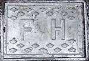 |
| ductile iron surface box lid of an unnumbered primer silver Round Head |
| Choi Shun Street outside Hi-Tech Centre |
| Photo taken in Y2026-M05 |
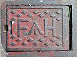 |
| ductile iron surface box lid of red Round Head SH4, with truncated arrow head |
| Yi Hong Street opposite of Hoi Kwun Mansion (Riviera Gardens Tower 9) |
| Photo taken in Y2026-M06 |
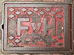 |
| ductile iron surface box lid of red Round Head 1421, with Water Supplies Department logo, manufacturer, and technical specification of the lid; two of the diamonds below the WSD logo were swapped out for triangles |
| Sing Woo Rd opposite of Shing Ping St |
| Photo taken in Y2026-M04 |
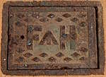 |
| unpainted cast iron surface box lid of green Round Head G1, with truncated arrow head |
| Park Promenade, approximately 100 metres north of Disneyland Resort Pier |
| Photo taken in Y2026-M03 |
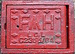 |
| cast iron surface box lid of red Round Head ETP5, with truncated arrow head and manufacturer name |
| Tin Ping Estate emergency vehicle access outside Tin Mei House |
| Photo taken in Y2026-M07 |
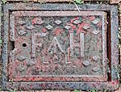 |
| cast iron surface box lid of red Round Head SH8, with truncated arrow head and manufacturer name |
| Yi Lok Street at Wing Shun Street (Riviera Gardens) |
| Photo taken in Y2026-M06 |
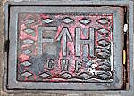 |
| cast iron surface box lid of red Round Head ECHH-09, with full arrow head and manufacturer name |
| Ching Ho Estate |
| Photo taken in Y2026-M05 |
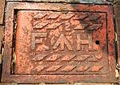 |
| one of three cast iron surface box lid of Heavy Draw-off hydrant 28201, with truncated arrow head and parallelograms |
| Cornwall Street near Waterloo Road |
| Photo taken in Y2026-M04 |
Under the lid
Not shown in WSD 7.26 and WSD 7.46, there is an operating valve inside the surface box. To use the hydrant, a hydrant key will be inserted into the surface box to turn the valve. If the valve is not turned, the hydrant will not let out any water. I guess this is how misuse is prevented - only firefighters can use hydrants even though the caps have handles (which means anyone with hands can turn open the caps). Some hydrant keys were displayed with other firefighting equipment on a retired fire engine at Hung Hom Urban Park.
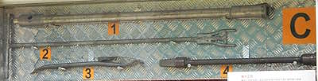 |
| hydrant keys on display (1, 2, 4), note that (1) is missing the horizontal bar (hence the hole on the left), the hydrant key should form a T-shape when being used |
| retired fire engine, Hung Hom Urban Park |
| Photo taken in Y2026-M07 |
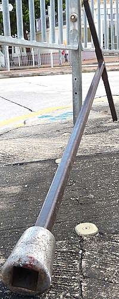 |
| close-up photo of a hydrant key that was probably used to turn the valve of the red Round Head 28490 a few steps away, allowing a nearby road work (?) site to use the water from the hydrant |
| Waterloo Road at Suffolk Road |
| Photo taken in Y2026-M08 |
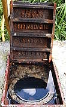 |
| surface box lid of red Round Head 8840 being opened, with the surface box being filled with water; 8840 has a portable meter connected to one of its side nozzles, presumably for some sort of water-related testing |
| cycling track next to So Kwun Po Rd near Kockey Club Rd |
| Photo taken in Y2026-M07 |
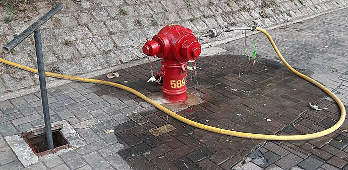 |
| surface box lid of red Round Head 5895 (later 23251) being opened, with the T-shaped hydrant key inserted into the surface box |
| Wing Shun Street opposite of Wing Tak Street |
| Photo taken in Y2022-M01 |
The oddball lids
There are some lids that do not conform to the design shown in WSD 7.26 or WSD 7.46.
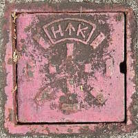 |
| unique surface box lid of the unique AVK Model 2700 with caps that have both nut and handles |
| Tsing Yi Heung Sze Wui Rd @ Cheung Ching Tunnel East Substation |
| Photo taken in Y2026-M06 |
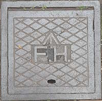 |
| big square surface box lid near red Round Head 30135, but 30135 also has an ordinary surface box lid closer to itself |
| Shau Kei Wan Main Street East opposite of Shau Kei Wan Market Building |
| Photo taken in Y2026-M02 |